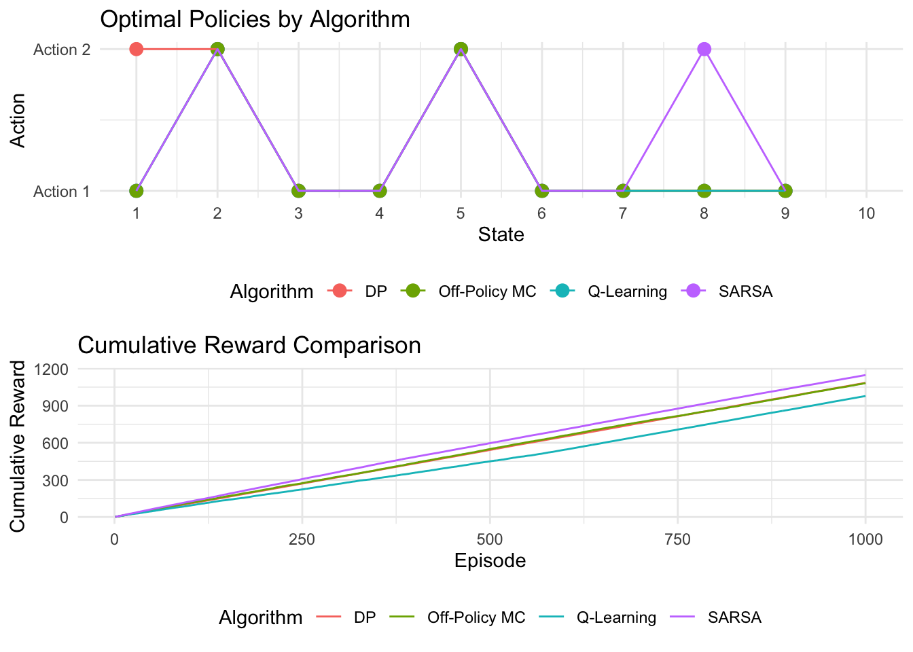

Chapter 5 On-Policy vs Off-Policy Reinforcement Learning: SARSA, Q-Learning, and Monte Carlo in R
5.1 Introduction
In model-free reinforcement learning (RL), agents learn optimal policies directly from interaction without an explicit model of environment dynamics. On-policy and off-policy methods differ in whether they learn about the policy they actually follow (on-policy) or about a separate target policy while behaving differently (off-policy). SARSA (State-Action-Reward-State-Action) is a canonical on-policy control algorithm, whereas Q-Learning and off-policy Monte Carlo with importance sampling are standard off-policy methods. This post outlines their theoretical foundations, practical implications, and R implementations in a 10-state, 2-action Markov decision process (MDP), including outcome devaluation. All three aim to estimate the action-value function \(Q^\pi(s,a)\), the expected discounted return for taking action \(a\) in state \(s\) and then following policy \(\pi\):
\[ Q^\pi(s,a) = \mathbb{E}_\pi \left[ \sum_{t=0}^\infty \gamma^t R_{t+1} \mid S_0 = s, A_0 = a \right] \]
where \(\gamma \in [0,1]\) is the discount factor and \(R_{t+1}\) is the reward at time \(t+1\).
5.2 SARSA (On-Policy)
SARSA is an on-policy temporal-difference method that learns the value of the behavior policy, including its exploratory actions. Its update rule is
\[ Q(s,a) \leftarrow Q(s,a) + \alpha \left( r + \gamma Q(s', a') - Q(s,a) \right), \]
where \(\alpha\) is the learning rate, \(r\) is the reward, and \(a'\) is the action selected in \(s'\) under the current (e.g., \(\epsilon\)-greedy) policy. Because SARSA updates with the actual next stateâaction pair \((s',a')\), it internalizes exploration and can learn more cautious policies that avoid risky exploratory transitions. In the 10-state environment, this can lead SARSA to hedge between actions that differ in expected return but also in risk.
5.3 Q-Learning (Off-Policy)
Q-Learning is an off-policy TD control algorithm that learns the optimal policy \(\pi^*\) while potentially following a different exploratory behavior policy. The update rule
\[ Q(s,a) \leftarrow Q(s,a) + \alpha \left( r + \gamma \max_{a'} Q(s', a') - Q(s,a) \right) \]
uses the maximum action-value in the next state, assuming the agent will act greedily from \(s'\) onward. This bootstrap target allows convergence to the optimal action-value function \(Q^*(s,a)\) under standard conditions, even when the behavior policy remains \(\epsilon\)-greedy. In the 10-state task, Q-Learning tends to favor action 1 in state 9, which leads with high probability to the terminal state with reward 1.0, largely ignoring the effect of exploration noise.
5.4 Off-Policy Monte Carlo with Importance Sampling
Off-policy Monte Carlo control learns a target policy (e.g., greedy) from episodes generated by a possibly different behavior policy, using importance sampling to correct for the mismatch. For a return \(G_t\) from time \(t\), the importance sampling ratio is
\[ \rho_t = \prod_{k=t}^T \frac{\pi(a_k \mid s_k)}{\mu(a_k \mid s_k)}, \]
where \(\pi\) is the target policy, \(\mu\) the behavior policy, and \(T\) the terminal time. The Q-update can be written as
\[ Q(s,a) \leftarrow Q(s,a) + \alpha \left( \rho_t G_t - Q(s,a) \right), \]
or implemented as a weighted average over returns using cumulative weights to reduce variance, as in the R code with \(C\) and normalized \(W/C\). In the 10-state environment with a random behavior policy (uniform over actions) and a greedy target policy, trajectories that deviate from the greedy choice (e.g., taking the lower-reward action 2 in state 9) receive small or zero weight, while matching trajectories drive learning toward the optimal policy, at the cost of potentially high variance when policies differ strongly.
5.5 Environment and Common R Components
The shared R setup defines a 10-state, 2-action MDP via transition and reward tensors, together with helper functions for \(\epsilon\)-greedy action selection and environment simulation.
# Common settings
n_states <- 10
n_actions <- 2
gamma <- 0.9
terminal_state <- n_states
# Environment: transition and reward models
set.seed(42)
transition_model <- array(0, dim = c(n_states, n_actions, n_states))
reward_model <- array(0, dim = c(n_states, n_actions, n_states))
for (s in 1:(n_states - 1)) {
transition_model[s, 1, s + 1] <- 0.9
transition_model[s, 1, sample(1:n_states, 1)] <- 0.1
transition_model[s, 2, sample(1:n_states, 1)] <- 0.8
transition_model[s, 2, sample(1:n_states, 1)] <- 0.2
for (s_prime in 1:n_states) {
reward_model[s, 1, s_prime] <- ifelse(s_prime == n_states, 1.0, 0.1 * runif(1))
reward_model[s, 2, s_prime] <- ifelse(s_prime == n_states, 0.5, 0.05 * runif(1))
}
}
transition_model[n_states, , ] <- 0
reward_model[n_states, , ] <- 0
# Helper function: Epsilon-greedy policy
epsilon_greedy <- function(Q, state, epsilon) {
if (runif(1) < epsilon) {
sample(1:n_actions, 1)
} else {
which.max(Q[state, ])
}
}
# Helper function: Simulate environment
simulate_step <- function(state, action) {
probs <- transition_model[state, action, ]
next_state <- sample(1:n_states, 1, prob = probs)
reward <- reward_model[state, action, next_state]
list(next_state = next_state, reward = reward)
}This code constructs a reproducible MDP where action 1 is relatively directed toward the terminal state with higher terminal reward, while action 2 is more stochastic with lower terminal reward, and non-terminal transitions yield small random rewards. The terminal state has zero outgoing probability and reward, and the \(\epsilon\)-greedy helper balances exploration and exploitation using the learned Q-values.
5.6 SARSA in R
# SARSA
sarsa <- function(n_episodes = 1000, alpha = 0.1, epsilon = 0.1) {
Q <- matrix(0, n_states, n_actions)
policy <- rep(0, n_states)
rewards <- numeric(n_episodes)
for (episode in 1:n_episodes) {
state <- sample(1:(n_states - 1), 1)
action <- epsilon_greedy(Q, state, epsilon)
episode_reward <- 0
while (state != terminal_state) {
step <- simulate_step(state, action)
next_state <- step$next_state
reward <- step$reward
next_action <- epsilon_greedy(Q, next_state, epsilon)
Q[state, action] <- Q[state, action] + alpha * (
reward + gamma * Q[next_state, next_action] - Q[state, action]
)
state <- next_state
action <- next_action
episode_reward <- episode_reward + reward
}
rewards[episode] <- episode_reward
}
policy[1:(n_states - 1)] <- apply(Q[1:(n_states - 1), ], 1, which.max)
list(Q = Q, policy = policy, rewards = rewards)
}This function implements on-policy SARSA: it initializes a zero Q-table, runs multiple episodes from random non-terminal start states, and updates \(Q(s,a)\) after each transition using the subsequent \(\epsilon\)-greedy action \(a'\). The final deterministic policy selects the argmax action per state, and the vector rewards stores per-episode returns for later comparison.
5.7 Q-Learning in R
# Q-Learning
q_learning <- function(n_episodes = 1000, alpha = 0.1, epsilon = 0.1) {
Q <- matrix(0, n_states, n_actions)
policy <- rep(0, n_states)
rewards <- numeric(n_episodes)
for (episode in 1:n_episodes) {
state <- sample(1:(n_states - 1), 1)
episode_reward <- 0
while (state != terminal_state) {
action <- epsilon_greedy(Q, state, epsilon)
step <- simulate_step(state, action)
next_state <- step$next_state
reward <- step$reward
Q[state, action] <- Q[state, action] + alpha * (
reward + gamma * max(Q[next_state, ]) - Q[state, action]
)
state <- next_state
episode_reward <- episode_reward + reward
}
rewards[episode] <- episode_reward
}
policy[1:(n_states - 1)] <- apply(Q[1:(n_states - 1), ], 1, which.max)
list(Q = Q, policy = policy, rewards = rewards)
}The Q-Learning implementation differs from SARSA only in its target: the next stateâs value is approximated with \(\max_{a'} Q(s',a')\), so no explicit next_action is required for the update. This off-policy bootstrap drives Q toward \(Q^*\), and the resulting greedy policy typically exploits high-reward transitions more aggressively than SARSA in the same environment.
5.8 Off-Policy Monte Carlo in R
# Off-Policy Monte Carlo
off_policy_mc <- function(n_episodes = 1000, epsilon = 0.1) {
Q <- matrix(0, n_states, n_actions)
C <- matrix(0, n_states, n_actions) # Cumulative weights
policy <- rep(0, n_states)
rewards <- numeric(n_episodes)
for (episode in 1:n_episodes) {
# Generate episode using behavior policy (random)
states <- numeric(0)
actions <- numeric(0)
rewards_ep <- numeric(0)
state <- sample(1:(n_states - 1), 1)
while (state != terminal_state) {
action <- sample(1:n_actions, 1)
step <- simulate_step(state, action)
next_state <- step$next_state
reward <- step$reward
states <- c(states, state)
actions <- c(actions, action)
rewards_ep <- c(rewards_ep, reward)
state <- next_state
}
rewards[episode] <- sum(rewards_ep)
# Update Q using weighted importance sampling
G <- 0
W <- 1
for (t in length(states):1) {
state <- states[t]
action <- actions[t]
reward <- rewards_ep[t]
G <- gamma * G + reward
C[state, action] <- C[state, action] + W
Q[state, action] <- Q[state, action] + (W / C[state, action]) * (G - Q[state, action])
pi_action <- which.max(Q[state, ])
if (action != pi_action) break
W <- W / (1 / n_actions) # Importance sampling ratio
}
}
policy[1:(n_states - 1)] <- apply(Q[1:(n_states - 1), ], 1, which.max)
list(Q = Q, policy = policy, rewards = rewards)
}This function performs off-policy Monte Carlo control with a random behavior policy and a greedy target policy, using weighted importance sampling. Episodes are generated under uniform random actions, then processed backward to accumulate returns \(G\), update cumulative weights \(C\), and refine \(Q\) using \(W/C\) as a variance-reducing weight; the backward loop terminates when the behavior action diverges from the current greedy target action, reflecting that the remaining trajectory has zero probability under the greedy policy.
5.9 Value Iteration in R
# Value Iteration (from DP)
value_iteration <- function(transition_model, reward_model, gamma, epsilon = 1e-6, max_iter = 1000) {
V <- rep(0, n_states)
policy <- rep(0, n_states)
delta <- Inf
iter <- 0
while (delta > epsilon && iter < max_iter) {
delta <- 0
V_old <- V
for (s in 1:(n_states - 1)) {
Q <- numeric(n_actions)
for (a in 1:n_actions) {
Q[a] <- sum(transition_model[s, a, ] * (reward_model[s, a, ] + gamma * V))
}
V[s] <- max(Q)
policy[s] <- which.max(Q)
delta <- max(delta, abs(V[s] - V_old[s]))
}
iter <- iter + 1
}
# Evaluate DP policy
rewards <- numeric(1000)
for (episode in 1:1000) {
state <- sample(1:(n_states - 1), 1)
episode_reward <- 0
while (state != terminal_state) {
action <- policy[state]
step <- simulate_step(state, action)
episode_reward <- episode_reward + step$reward
state <- step$next_state
}
rewards[episode] <- episode_reward
}
list(V = V, policy = policy, rewards = rewards)
}Value iteration is a dynamic programming algorithm that computes the optimal state-value function \(V^*\) by repeatedly applying the Bellman optimality update
\[ V_{k+1}(s) \leftarrow \max_a \sum_{s'} P(s' \mid s,a)\bigl(R(s,a,s') + \gamma V_k(s')\bigr). \] Once \(V\) stabilizes, a greedy policy is extracted by choosing the action that maximizes the expected return in each state; the code then simulates episodes under this policy to obtain reward statistics for comparison with the model-free methods.
5.10 Running and Visualizing the Algorithms in R
# Run algorithms
set.seed(42)
dp_result <- value_iteration(transition_model, reward_model, gamma)
sarsa_result <- sarsa(n_episodes = 1000, alpha = 0.1, epsilon = 0.1)
qlearn_result <- q_learning(n_episodes = 1000, alpha = 0.1, epsilon = 0.1)
mc_result <- off_policy_mc(n_episodes = 1000, epsilon = 0.1)
# Visualization
library(ggplot2)
library(gridExtra)
# Policy comparison
policy_df <- data.frame(
State = rep(1:n_states, 4),
Policy = c(dp_result$policy, sarsa_result$policy, qlearn_result$policy, mc_result$policy),
Algorithm = rep(c("DP", "SARSA", "Q-Learning", "Off-Policy MC"), each = n_states)
)
policy_df$Policy[n_states * 0:3 + n_states] <- NA # Terminal state
policy_plot <- ggplot(policy_df, aes(x = State, y = Policy, color = Algorithm)) +
geom_point(size = 3) +
geom_line(aes(group = Algorithm), na.rm = TRUE) +
theme_minimal() +
labs(title = "Optimal Policies by Algorithm", x = "State", y = "Action") +
scale_x_continuous(breaks = 1:n_states) +
scale_y_continuous(breaks = 1:n_actions, labels = c("Action 1", "Action 2")) +
theme(legend.position = "bottom")
# Reward comparison
reward_df <- data.frame(
Episode = rep(1:1000, 4),
Reward = c(
cumsum(dp_result$rewards),
cumsum(sarsa_result$rewards),
cumsum(qlearn_result$rewards),
cumsum(mc_result$rewards)
),
Algorithm = rep(c("DP", "SARSA", "Q-Learning", "Off-Policy MC"), each = 1000)
)
reward_plot <- ggplot(reward_df, aes(x = Episode, y = Reward, color = Algorithm)) +
geom_line() +
theme_minimal() +
labs(title = "Cumulative Reward Comparison", x = "Episode", y = "Cumulative Reward") +
theme(legend.position = "bottom")
# Display plots
grid.arrange(policy_plot, reward_plot, ncol = 1)## Warning: Removed 4 rows containing missing values or values outside the scale range (`geom_point()`).
## Average Cumulative Reward per Episode:## DP: 1.084506## SARSA: 1.147303## Q-Learning: 0.9781511## Off-Policy MC: 1.081865This code runs dynamic programming, SARSA, Q-Learning, and off-policy Monte Carlo under shared hyperparameters, then compares their learned policies and cumulative rewards using ggplot2. The policy plot reveals how closely each model-free method approximates the DP optimal policy, while the cumulative reward plot and average return provide quantitative performance summaries over training episodes.
5.11 Interpretation and Discussion
5.11.1 Policy differences
- SARSA learns the value of an \(\epsilon\)-greedy behavior policy, so its final greedy policy reflects the long-run consequences of exploration and often appears more conservative in risky regions of the state space.
- Q-Learning estimates the value of acting optimally from the next state onward, producing policies that more strongly prefer high-reward transitions (e.g., action 1 in state 9) and that are less sensitive to exploration noise.
- Off-policy Monte Carlo, using importance sampling and a greedy target, tends to agree with Q-Learningâs preferences but can show variability and slower stabilization when behavior (random) and target (greedy) policies differ strongly.
5.11.2 Devaluation
When terminal rewards are devalued (e.g., reduced or removed) without further interaction, all three model-free methods keep their learned policies because they cache Q-values from past experience rather than recomputing values from a model. In contrast, a model-based method such as value iteration can immediately adjust the optimal policy once the reward model changes, highlighting a key difference between habitual (model-free) and goal-directed (model-based) control.
5.11.3 Practical implications
- SARSA is preferable when the deployed behavior policy must be evaluated as-is, such as in safety-critical control where exploratory deviations must be explicitly accounted for.
- Q-Learning suits settings where the priority is the optimal greedy policy and exploration costs are low or purely virtual, such as many games and simulations.
- Off-policy Monte Carlo is attractive in offline RL from logged data, since it can learn a new policy from trajectories generated by older or random policies, but care is needed to manage the high variance of importance sampling.
5.11.4 Experimental observations
Empirically, before devaluation, both Q-Learning and off-policy Monte Carlo usually converge to policies that select action 1 in late states to exploit its higher expected terminal reward, while SARSA may be more mixed when exploration makes risky transitions salient. After devaluation, all three retain these policies until retrained, whereas DP immediately adapts due to direct access to the updated reward model. Off-policy Monte Carloâs stability depends heavily on how often the behavior policy generates trajectories consistent with the current greedy policy, since low overlap inflates importance sampling variance.
5.12 Conclusion
SARSA, Q-Learning, and off-policy Monte Carlo illustrate complementary approaches to model-free RL control: on-policy learning of the exploration-aware behavior policy, off-policy TD learning of the optimal greedy policy, and off-policy Monte Carlo learning from complete episodes with importance sampling. The R implementations in a simple 10-state MDP, together with value iteration as a model-based reference, make these distinctions concrete and show how outcome devaluation exposes the habitual, cached nature of model-free solutions. Extensions such as eligibility traces (e.g., SARSA\(\lambda\)), deep Q-networks, and advanced variance-reduction techniques for off-policy Monte Carlo build directly on these foundations.
5.13 Comparison Table
| Aspect | SARSA (On-Policy) | Q-Learning (Off-Policy) | Off-Policy Monte Carlo |
|---|---|---|---|
| Learning approach | Incremental TD; updates using action actually taken under behavior policy. | Incremental TD; updates using \(\max_{a'} Q(s',a')\) regardless of behavior. | Episode-based; updates from complete returns with importance weights. |
| Update rule | \(Q(s,a) \leftarrow Q(s,a) + \alpha (r + \gamma Q(s',a') - Q(s,a))\). | \(Q(s,a) \leftarrow Q(s,a) + \alpha (r + \gamma \max_{a'} Q(s',a') - Q(s,a))\). | \(Q(s,a) \leftarrow Q(s,a) + \alpha (\rho_t G_t - Q(s,a))\). |
| Episode requirement | Online; updates do not require complete episodes. | Online; updates do not require complete episodes. | Requires full episodes to compute returns and ratios. |
| Bias and variance | Biased via bootstrapping, moderate variance. | Biased via bootstrapping, typically lower variance than MC. | Unbiased in expectation but often high variance due to importance sampling. |
| Policy type | On-policy; estimates value of behavior (\(\epsilon\)-greedy) policy. | Off-policy; estimates optimal greedy policy. | Off-policy; targets greedy policy from off-policy data. |
| Exploration impact | Exploration directly shapes learned Q-values. | Exploration affects data but not the greedy target in updates. | Exploration pattern affects returns, then is corrected via importance weights. |
| Convergence | Converges to value of limiting behavior policy if \(\epsilon \to 0\). | Converges to \(Q^*\) under standard conditions with sufficient exploration. | Converges to optimal policy given sufficient coverage and finite variance. |
| Qualitative behavior | More conservative, accounts for exploration risk. | More aggressive, assumes optimal future actions. | Can be aggressive but unstable when behavior and target differ strongly. |
| Example in 10-state MDP | May mix actions 1 and 2, reflecting exploration. | Typically favors action 1 in late states for higher terminal reward. | Tends to favor action 1 but may show variability from high-variance weights. |